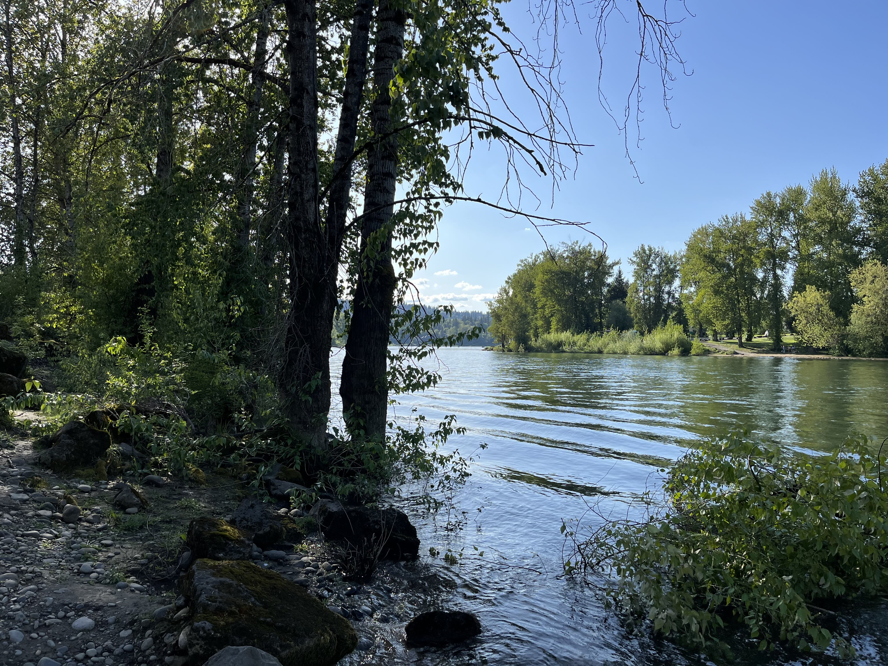
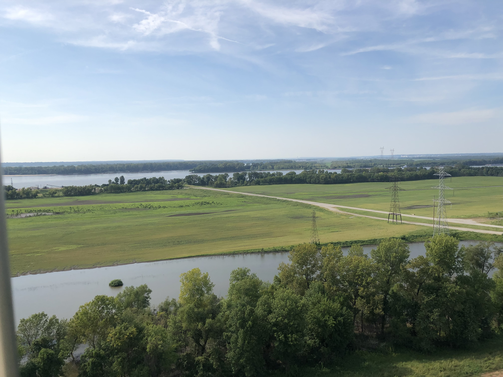
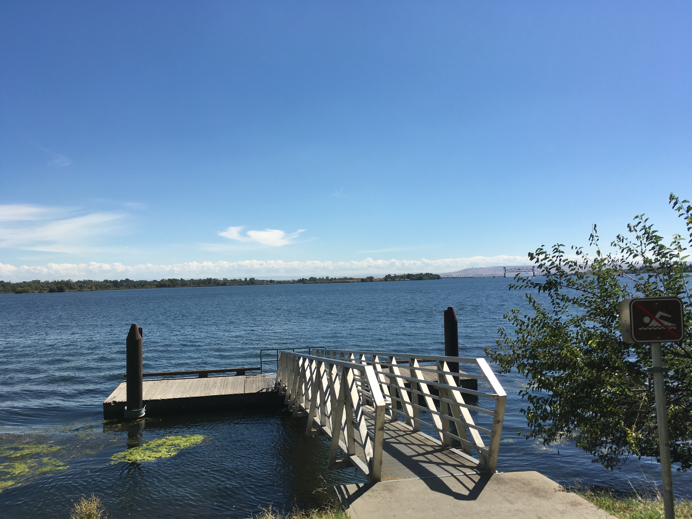

River Confluences
I enjoy visiting river confluences. I’m not really sure what attracts me to them, but I seek them out when I travel. Here is a small collection of ones that I have visited.



I enjoy visiting river confluences. I’m not really sure what attracts me to them, but I seek them out when I travel. Here is a small collection of ones that I have visited.


